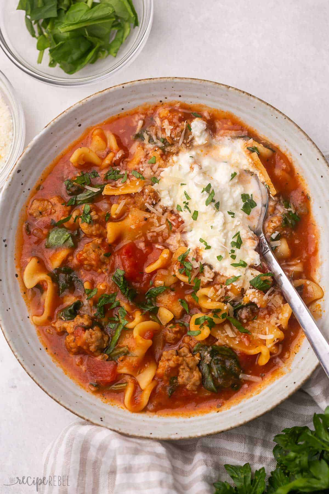

Home
Crockpot Lasagna

Description
This Crockpot Lasagna Soup recipe is full of flavor! It has a tomato base, made with
Italian sausage, lasagna noodles, and lots of Italian herbs and cheeses. It can
also be made in the Instant Pot!
Prep Time
10 minutes
Cook Time
6 hours
Servings
4
Ingredients
- 1lb mild italian sausage (casings removed)
- 1 medium onion (finely chopped)
- 2 teaspoons minced garlic
- 1 teaspoon italian seasoning
- 1/2 teaspoon salt
- 1/4 teaspoon black pepper
- 3 cups low-sodium chicken broth
- 14oz (398ml) canned diced tomatoes (italian style)
- 1 1/2 cups jarred tomato pasta sauce
- 2 cups short pasta or 8 broken lasagna noodes of about 160g
- 1 1/2 cups fresh spinach
- Shredded mozzarella and parmesan for serving
Instructions
- In a medium skillet, cook Italian sausage and onion over medium-high heat until
sausage is browned, stirring often.
- Stir in garlic, Italian seasoning, salt, and pepper. Pour into a 4-6 quart crockpot.
- Add broth, tomatoes, and pasta sauce. Cover and cook on low for 3-6 hours or high
for 2-3 hours (everything is cooked — this is just so it heats through and the
flavors come together).
- Turn the slow cooker to high, open the lid, stir in the pasta, and cook for
30 minutes or until tender. (OPTIONAL: you can also cook the pasta separately
if you prefer your noodles to stay at al dente).
- Just before serving, stir in spinach. Serve with cheese and fresh parsley as desired.
Nutrition
Serving: 469grams, Calories: 674cal, Carbohydrates: 55g, Protein: 29g, Fat: 38g,
Saturated Fat: 13g, Polyunsaturated Fat: 5g, Monounsaturated Fat: 17g, Cholesterol: 86mg,
Sodium: 1766mg, Potassium: 1140mg, Fiber: 5g, Sugar: 9g, Vitamin A: 1581IU, Vitamin C: 24mg,
Calcium: 113mg, Iron: 5mg